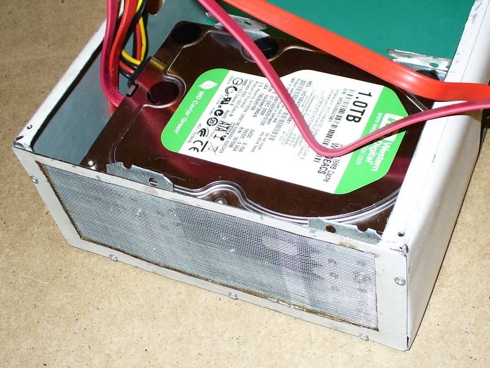

Описывается создание NAS на основе материнской платы Mini-ITX.
С увеличением числа компьютеров в моей домашней сети (два моих компьютера, компьютер сына, ноут жены, нетбук, наладонник с WiFi и проч.) мне всё чаще хотелось иметь некое сетевое хранилище, где находились бы все наши общие данные.
Требования были такие:
Всё завертелось, когда я наткнулся в компьютерном магазине на Mini-ITX материнскую плату Intel D945GCLF2. К материнке прикупил пару терабайтных тихих винтов от WD (это был максимальный на то время объём), пару тихих 12-см вентиляторов и маленький блок питания ATX-68A. Удалив шумный вентилятор у материнки и вынув блок питания из корпуса, я прикинул компоновку:
Потом взял крышку от компьютерного корпуса:
Обрезал лишнее, загнул края:
Приклепал к дну корпуса дно от блока питания, вживил боночки для материнки:
Соорудил крепление для жёстких дисков (из железок для крепления гипсокартона):
И прорезал отверстие для материнки:
Потом соорудил боковинки. Для этого вырезал из остатков корпуса рамочки по размеру, и впаял в них изнутри металлическую сетку. Сетку нашёл в хозяйственном магазине, это была такая круглая рамка с сеткой, чтоб накрывать сковороду при жарке, против брызг. Не знаю, как называется. Получилось симпатично:

После этого установил всю начинку в корпус:
Ну и крышка с вентиляторами. Вот такая получилась «Электроплитка»:
В очередной раз поковырявшись с линуксом, я в очередной же раз плюнул, и поставил Windows XP. Поставил на флешку, а из двух винчестеров организовал программное зеркало. Процедуру установки Windows на флешку брал здесь.
Конструкция получилась очень удачная. Тихая (уже в полуметре почти ничего не слышно), практически холодная (температура винчестеров 28°C, температура процессора - максимально 46°C). Да и эстетически мне она нравилась:)
К сожалению, 1Tb мне хватило ненадолго, а увеличить объём дискового пространства в рамках данной конструкции мне не удалось. Поэтому пришлось делать NAS-2. Но это уже совсем другая история:)
© AHTOXA, 2008-2010.